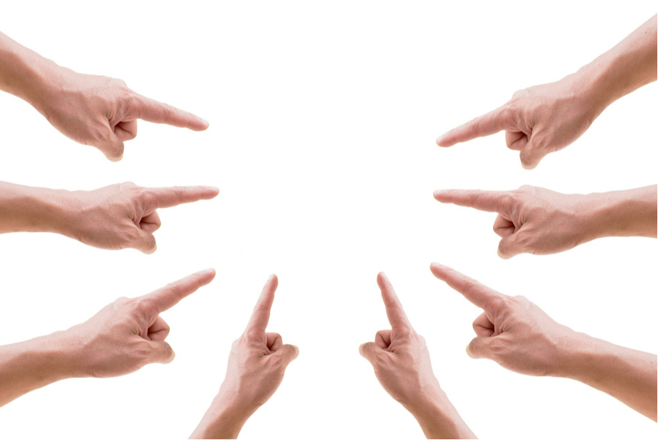

Learn the "Alphabet" in Swedish.
| Letter | Audio | Letter | Audio | Letter | Audio |
|---|---|---|---|---|---|
|
|||||
|
|||||
|
|
||||
|
|
||||
|
|
||||
|
|
||||
|
|||||
|
|
||||
|
|
| SWE | SWE | SWE | SWE | SWE |
|---|---|---|---|---|
| 1 - En/ett | 11 - Elva | 21 - Tjugoett | 31 - Trettioett | 50 - Femtio |
| 2 - Två | 12 - Tolv | 22 - Tjugotvå | 32 - Trettiotvå | 60 - Sextio |
| 3 - Tre | 13 - Tretton | 23 - Tjugotre | 33 - Trettiotre | 70 - Sjuttio |
| 4 - Fyra | 14 - Fjorton | 24 - Tjugofyra | 34 - Trettiofyra | 80 - Åttio |
| 5 - Fem | 15 - Femton | 25 - Tjugofem | 35 - Trettiofem | 90 - Nittio |
| 6 - Sex | 16 - Sexton | 26 - Tjugosex | 36 - Trettiosex | 100 - Hundra |
| 7 - Sju | 17 - Sjutton | 27 - Tjugosju | 37 - Trettiosju | 1000 - Tusen |
| 8 - Åtta | 18 - Årton | 28 - Tjugoåtta | 28 - Trettioåtta | 10000 - Tio tusen |
| 9 - Nio | 19 - Nitton | 29 - Tjugonio | 39 - Trettionio | 100000 - Hundra tusen |
| 10 - Tio | 20 - Tjugo | 30 - Trettio | 40 - Fyrtio | 0 - Noll |
You see after 40 I did not write the 41, 42, etc. The reason is that you just keep the way counting like from 31 - Trettioett, Trettiotvå etc. When you listen to the audio below you might notice that when I pronounce for example Trettionio you do not hear the O from trettio but you pronounce it when you say 30 or 40 in Swedish. It will become silent in 31, etc.
Click on the play button to listen to the "Counting" in Swedish.
Time to learn the "Time in Swedish" an hour is called "Timme" in Swedish. You can hover over or click on the image to make it bigger as in some browsers you might see the hands of the clock very well.
| Tid | Audio | Tid | Audio | Tid | Audio |
|---|---|---|---|---|---|
Klockan är ett |
Klockan är två |
 Klockan är tre |
|||
 Klockan är fyra |
 Klockan är fem |
Klockan är sex |
|||
 Klockan är sju |
 Klockan är åtta |
 Klockan är nio |
|||
 Klockan är tio |
Klockan är elva |
 Klockan är tolv |
|||
 Klockan är fem över tre |
Klockan är tio över fyra |
 Klockan är kvart över fyra |
|||
 Klockan är tjugo över två |
Klockan är fem i halv fyra |
 Klockan är halv två |
|||
 Klockan är fem över halv två |
 Klockan är tjugo i tre |
 Klockan är kvart i fyra |
|||
 Klockan är tio i fem |
 Klockan är fem i sex |
Klockan är sex över elva |
Names of days and months. A week in called "Veckor" in Swedish. You see that some months are the same in English. This is not a typo, in case you were wondering.
| Days | Dagar | Months | Månader |
|---|---|---|---|
| Monday | Måndag | January | Januari |
| Tuesday | Tisdag | February | Februari |
| Wednesday | Onsdag | March | Mars |
| Thursday | Torsdag | April | April |
| Friday | Fredag | May | Maj |
| Saturday | Lördag | June | Juni |
| Sunday | Söndag | July | Juli |
| August | Augusti | ||
| September | September | ||
| October | Oktober | ||
| November | November | ||
| December | December |
Click on the play button to listen to the "Days" in Swedish.
Click on the play button to listen to the "Months" in Swedish.
There are many ways to great someone like in other countries, but these are the most common ones
| Eng | Swe |
|---|---|
| Welcome | Välkommen |
| Hello | Hej |
| Good morning | God morgon |
| Good afternoon | God eftermiddag |
| Good evening | God kväll |
| Good night | God natt |
| Good bye | Hej då |
Click on the play button to listen to the "Greetings" in Swedish.
| Eng | You - Du | Eng | Me - Jag |
|---|---|---|---|
| Hello | Hej | Hello | Hej |
| What is your name? | Vad heter du? | My name is Melanie. And you? | Jag heter Melanie, och du? |
| My name is patty, How are you? | Jag heter, Patty. Hur mår du? | I am ok, thank you. And you? | Jag, mår bra tack. Och du? |
| I am ok, thank you. | Bra, tack. | Where are you from? | Varifrån kommer du? |
| I am coming from Ireland, and you? | Jag kommer från Irland. Och du? | I am from Germany. | Jag kommer från Tyskland. |
| Nice to meet you. Good bye. | Trevligt att träffas. Hej då | Nice to meet you too. Good bye. | Det samma. Hej då. |
Congratulations, You now know how to say "Hi", "Good Bye" and ask how someone is, where are they coming from and ask for their name.
Click on the play button to listen to the "Conversation" in Swedish.
Obestämd if a form of a noun where it describes an object or someone. Here above you see and can listen to some samples. You see that some words get "AR", "OR" and by bord, in plural it stays a bord Some words like the plural for "bok" changes a lot. See below. There are 5 rules, which we will discuss later. This is to show you and learn more of the Swedish language.
| Single | Plural | Audio | Single | Plural | Audio |
|---|---|---|---|---|---|
en gaffel |
flera gafflar |
en kniv |
flera knivar |
||
en sked |
flera skedar |
en bok |
flera böcker |
||
en bil |
flera bilar |
 en blomma |
flera blommor |
||
ett bord |
flera bord |
en lampa |
flera lampor |
| Color | Audio | Color | Audio | Color | Audio |
|---|---|---|---|---|---|
Gul |
Svart |
 Blå |
|||
 Rosa |
Brun |
Grå |
|||
Lila |
Röd |
 Vit |
|||
Grön |
Orange |
beige |
It is time for a quiz. Go the quiz tab and look up the "Swedish Quiz - Lessons 1 - 8" Forgive me for the simple looking style, this is the 1st quiz I have made with JavaScript following a video that I could actually follow. Once I have learned more hopefully, they will look better. But you can practice what you have learned, and that is the most important. Each quiz will contain 10 questions. Good Luck!
How do you say "I", "She", "We", etc in Swedish.
| English | Swedish | Sample English | Sample Swedish | Audio |
|---|---|---|---|---|
| I | Jag | I am a woman. | Jag är en kvinna. | |
| You | Du | You are my friend. | Du är min vän. | |
| She | Hon | She is my neighbor. | Hon är min granne. | |
| He | Han | He goes to school. | Han går till skolan. | |
| We | vi | We go to the cinema. | Vi går på bio. | |
| You | Ni | You work together. | Ni arbetar tillsammans. | |
| They | De | They run home. | De springer hem. |
You noticed that when pronouncing "De", it sound like "Dom" Also in Sweden you have letters you see but do need pronounce and letters you do not see, you pronounce. We will come back on this in other lesson.
Like any language Sweden has specific words as well to start a question. See below with examples.
| English | Swedish | Sample English | Sample Swedish | Audio |
|---|---|---|---|---|
| Who ..? | Vem..? | who will go to the beach? | Vem går till stranden? | |
| What..? | Vad..? | What is it? | Vad är det? | |
| Where..? | Var..? | Where do do you live? | Var bor du? | |
| Where (to)..? | Vart..? | where are you going? | Vart ska du? | |
| When..? | När..? | When are you going to school? | När ska du gå i skolan? | |
| Why..? | Varför..? | Why did you do it? | Varför gjorde du det? | |
| From where..? | Varifrån..? | Where are you coming from? | Varifrån kommer du? | |
| How..? | Hur..? | How are you? | Hur mår du? | |
| How much..? | Hur mycket..? | How much is that car? | Hur mycket är den bilen? | |
| How many..? | Hur många..? | How many cars do you have? | Hur många bilar har du? |
You notice that in English you have to 2x "Where" and 1 has to after it. Do difference is that "Vart" is used in question of where someone is going to, on holiday, to the store, work, etc. While "Var" is used of asking where something or someone is.
"När" is more related to a time when something will find place.
På eller I. Eller means Or in English. I am not sure how much you know already about the Swedish language, if some you might have noticed these words a lot in different types of sentences. Even if you look in lesson 3 about time. See for example: Klockan är kvart i fyra. Meaning it is 15 minutes before 4 o'Clock. And an example of på you see in lesson: Vi går på bio. There is some logic but is most languages there are always some exceptions. See below several common examples and learning new words in the process. When you listen to the audio for at the station, you will hear I pronounce it differently. I will explain why this later in other lesson.
| Eng | I | Audio | Eng | På | Audio |
|---|---|---|---|---|---|
| In the house. | I huset. | At the library. | På biblioteket. | ||
| In the store. | I affären. | At the cinema. | På bio. | ||
| In the kiosk. | I kiosken. | At the station. | På stationen. | ||
| In the church. | I kyrkan. | At the hospital. | På sjukhuset. | ||
| In school. | I skolan. | At the bank. | På banken. | ||
| In jail. | I fängelset. | At work. | På arbetet. | ||
| In the livingroom. | I vardagsrummet. | On the toilet. | På toaletten. | ||
| In the kitchen. | I köket. | On the balcony. | På balkongen. | ||
| In Sweden. | I Sverige. | On the street. | På gatan. | ||
| In Stockholm. | I Stockholm. | On the square. | På torget. | ||
| In town. | I by. | On the island. | På Ö. | ||
| In Smäland (region). | I Småland. | On the mountain. | På berget. | ||
| In love. | Kär i. | Angry with. | Arg på. | ||
| Crazy about. | galen i. | Sorry for. | Ledsen på. | ||
| In the City. | I stan. | At the forest. | På skogen. |
As you see above there are different ways to us it. Below you see the usage for future and past time På eller i.
| Datid (Past) | Nutid (Present | Framtid (Future) | Varje (Each) | English | Audio |
|---|---|---|---|---|---|
| I går | I dag | I morgon | - | Yesterday, Today and Tomorrow | |
| I morse | - | I morgon biti | På morgonen | This morning, Tomorrow Morning, In the morning | |
| I går kväll | I kväll | I kväll | På kvällen | Last night, On the night | |
| I natt | I natt | I natt | På natten | Tonigth, At night | |
| I julas | I jul | I jul och till jul | På julen | Last christmas, At christmas, For christmas, On christmas | |
| I lördags | - | På lördag | På lördagar | Last Saturday, On Saturday, On Saturdays |
And? Did you find the logic? På can be used as be as at, in, for, with while i can be used as in, about, past tense, present, future
In the 1st part of this lesson you might have spotted that when you are in a building or in a room, you mostly use i but toilet is using på. While it is in a room you still use på. In lesson 12 you will see some more samples
| From | Från | English | Swedish | Audio |
|---|---|---|---|---|
| From 1st image | Från första bilden | The chair stands on the floor. | Stolen står på golvet. | |
| From 1st image | Från första bilden | The lamp stands on the bureau. | Lampan står på byrån. | |
| From 1st image | Från första bilden | The notes hang on the wall. | Anteckningarna hänger på väggen. | |
| From 1st image | Från första bilden | The papers are in the bin. | Papperna ligger i papperskorgen. | |
| From 2nd image | Från andra bilden | The lamp is hanging from the ceiling. | Lampan hänger i taket. | |
| From 2nd image | Från andra bilden | The pillows are on the sofa. | Kuddarna ligger på soffan. | |
| From 2nd image | Från andra bilden | The coffee table stands on the carpet. | Soffbordet står på mattan. | |
| From 2nd image | Från andra bilden | The tableware stands in the cabinet. | Porslinen står i skåpet. | |
| From 2nd image | Från andra bilden | The lamp stands on the floor. | Lampan står på golvet. | |
| From 1st image | Från första bilden | The clock hangs on the wall. | Klockan hänger på väggen. |
You might have notices if you know some words already that the end is different. For example. A lamp is in Swedish Lampan, I will come back on this in a later lesson.
The 1st word is the Verb or you can say the basic word, for example: Tala. The 2nd word is the present, for example: Talar. And the 3rd word is the past, for example: Talade. Here below you see more samples. So now and then you see that I have added 2 different words you can use depending the situation or sentence.
Img |
Eng | Swe | Audio | Img |
Eng | Swe | Audio |
|---|---|---|---|---|---|---|---|
| Speak, Speaking, Spoke Talk, Talking, Talked |
Tala, Talar, Talade Prata, Pratar, Pratade |
Scream, Screaming, Screamed | Skrika, Skriker, Skrek | ||||
 |
Sleep, Sleeping, Slept | Sova, Sover, Sov | Send, Sending, Sent | Skicka, Skickar, Skickade | |||
| Fly, Flying, Flew | Flyga, Flyger, Flög |  |
Wake, Wake Up, Woke | Vakna, Vaknar, Vaknade | |||
| Dream, Dreaming, Dreamed | Drömma, Drömmer, Drömde | Shop, Shopping, Shopped Buy, Buys, Bougth |
Handla, Handlar, Handlade Köpa, Köper, Köpte |
||||
| Cry, Crying, Cried | Gråta, Gråter, Grät |  |
Clean, Cleans, Cleaned | Städa, Städar, Städade | |||
| Marry, Marrying, Married | Gifta, Gifter, Gifte | Read, Reading, Read | Läsa, Läser, Läste | ||||
 |
Smile, Smiling, Smiled | Le, Ler, Log | Paint, Painting, Painted Draw, Drawing, Drew |
Måla, Målar, Målade Rita, Ritar, Ritade |
|||
| Call, Calling, Called | Ringa, Ringer, Ringde |  |
Blow, Blows, Blew | Blåsa, Blåser, Blåste | |||
 |
Laugh, Laughing, Laughed | Skratta, Skrattar, Skrattade |  | Show, Shows, Showed Point, Pointing, Pointed |
Visa, Visar, Visade Peka, Pekar, Pekade |
||
| Fall, Falling, Fell | Ramla, Ramlar, Ramlade |  |
Travel, Traveling, Traveled | Resa, Reser, Reste | |||
| Drink, Drinking, Drank | Dricka, Dricker, Drack | Eat, Eating, Ate | Äta, Äter, Åt | ||||
 |
Go, Going, Went | Gå, Går, Gick | Wash, Washing, Washed | Diska, Diskar, Diskade | |||
 |
Go, Going, Went | Åka (skidor), Åker, Åkte | Work, Working, Worked Work, Working, Worked |
Arbeta, Arbetar, Arbetade Jobba, Jobbar, Jobbade |
|||
| Ride, Riding, Rode | Rida, Rider, Red | Move, Moving, Moved | Flytta, Flyttar, Flyttade |
These are just some examples. As you see like any language some words change strongly in past tense. While most verbs end in A, you see by Laugh Le it does not end in A, this is one of the exceptions. It is like any other language, you just have to learn and get comfortable with.